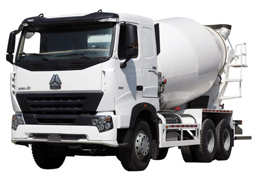

Concrete is a building material, which is obtained by solidifying a mixture of cement,
sand, crushed stone and water.
epending on the compressive strength, concrete is divided into stamps. The concrete brand builders determine the strength of the reference cube with a rib of 200 mm. So, in Ukraine, the following concrete grades are used during construction: "M-400", "M-300", "M-250", "M-150", "M-100" and lower. The choice of brand depends on the conditions in which concrete will be used. In some cases, concrete may contain special additives. Ready-made concrete of the desired brand is made at the factory and delivered to the construction site by auto-mixers. The ready-to-dry or semi-dry concrete mix is delivered to the place by dump trucks
